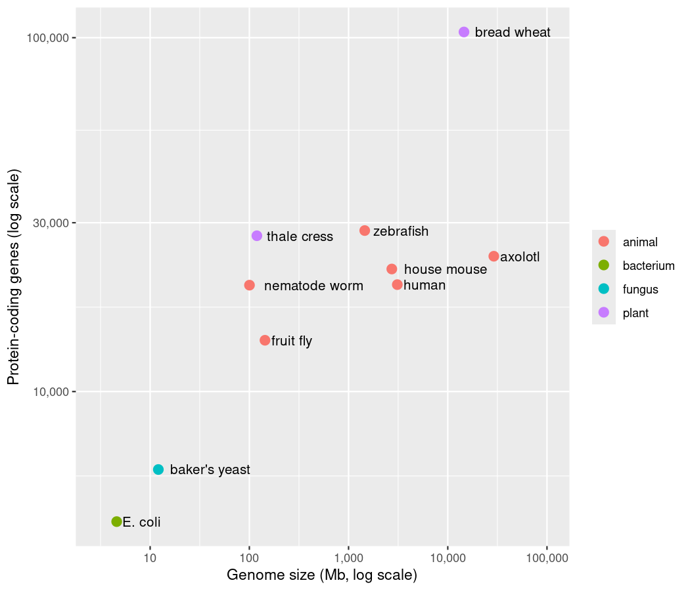

Exercise in R: genetics as information
Goal
By the end of this exercise you should be able to:
- read a CSV file into R, add a column with
mutate, and plot on log-scale axes with text labels.
Before you start
This page builds on the by-hand part of the Exercise, so do that first. You need the packages tibble, readr, dplyr and ggplot2. Download genomes.csv and save it in a data/ folder of your R project.
Tasks
The data for this part is in data/genomes.csv (download it and put it in a data/ folder next to your script). It lists ten organisms with genome size and protein-coding gene count. Every value comes from the NCBI Datasets reference genome and its current annotation, and the source column gives the assembly accession for each row.
New idiom: log-scale axes and text labels. When values span many orders of magnitude (here 4.6 to 29,118 Mb), a linear axis squashes most points into a corner. scale_x_log10() and scale_y_log10() space the axis by powers of ten instead, so 10, 100 and 1,000 are equally far apart. geom_text(aes(label = ...)) writes a label at each point, so you can see which organism is which without a legend.
R1. Build the table. Create the tibble with tribble() (one row per line, easy to read) and save it with write_csv(). If you downloaded the CSV, you can skip straight to R2, but read the code so you know where each number came from.
library(tibble)
library(readr)
genomes <- tribble(
~organism, ~common_name, ~group, ~genome_mb, ~protein_coding_genes, ~source,
"Escherichia coli", "E. coli", "bacterium", 4.6, 4290, "NCBI Datasets GCF_000005845.2 K-12 MG1655 (RefSeq annotation 2026-09)",
"Saccharomyces cerevisiae", "baker's yeast", "fungus", 12.1, 6021, "NCBI Datasets GCF_000146045.2 (SGD R64-5-1)",
"Caenorhabditis elegans", "nematode worm", "animal", 100.3, 19983, "NCBI Datasets GCF_000002985.6 (WormBase WS298)",
"Drosophila melanogaster", "fruit fly", "animal", 143.7, 13962, "NCBI Datasets GCF_000001215.4 (FlyBase 6.54)",
"Arabidopsis thaliana", "thale cress", "plant", 119.1, 27562, "NCBI Datasets GCF_000001735.4 (TAIR/Araport)",
"Danio rerio", "zebrafish", "animal", 1455.3, 28509, "NCBI Datasets GCF_052040795.2 (RefSeq annotation 2026-08)",
"Mus musculus", "house mouse", "animal", 2728.2, 22198, "NCBI Datasets GCF_000001635.27 (RefSeq annotation 2024-02)",
"Homo sapiens", "human", "animal", 3099.4, 20054, "NCBI Datasets GCF_000001405.40 (RefSeq annotation 2026-11)",
"Triticum aestivum", "bread wheat", "plant", 14566.5, 103793, "NCBI Datasets GCF_018294505.1 (RefSeq annotation 2025-04)",
"Ambystoma mexicanum", "axolotl", "animal", 29117.8, 24121, "NCBI Datasets GCF_040938575.1 (RefSeq annotation 2024-10)"
)
genomes
write_csv(genomes, "data/genomes.csv")R2. Read it back. Load the file with read_csv(). Which columns did read_csv read as numbers (dbl) and which as text (chr)?
library(readr)
library(dplyr)
library(ggplot2)
genomes <- read_csv("data/genomes.csv")
genomesR3. Genes per Mb. Add a column genes_per_mb with mutate(), then show it sorted from densest to least dense genome with arrange(desc(...)). Check the E. coli, yeast and human values against your answer to B6 in the exercise.
genomes <- genomes |>
mutate(genes_per_mb = protein_coding_genes / genome_mb)
genomes |>
select(common_name, genome_mb, protein_coding_genes, genes_per_mb) |>
arrange(desc(genes_per_mb))R4. First, a linear plot. Plot gene count against genome size on ordinary axes. Where do most of the organisms end up?
ggplot(genomes, aes(x = genome_mb, y = protein_coding_genes)) +
geom_point(aes(colour = group), size = 3) +
geom_text(aes(label = common_name), hjust = -0.15, size = 3.5)R5. Now on log scales. Add scale_x_log10() and scale_y_log10(). hjust = -0.15 in geom_text() puts each label just to the right of its point; limits makes room on the right for the axolotl’s label, and scales::label_comma() writes 10,000 instead of 1e+04.
ggplot(genomes, aes(x = genome_mb, y = protein_coding_genes)) +
geom_point(aes(colour = group), size = 3) +
geom_text(aes(label = common_name), hjust = -0.15, size = 3.5) +
scale_x_log10(limits = c(3, 100000), labels = scales::label_comma()) +
scale_y_log10(labels = scales::label_comma()) +
labs(x = "Genome size (Mb, log scale)",
y = "Protein-coding genes (log scale)",
colour = NULL)- Which organisms lie far to the right of the others with only an average number of genes?
- Which organism has many more genes than the rest, and why (see the Background in the exercise)?
- Among the animals only, by what factor does genome size vary, and by what factor does gene number vary? Use
filter()andsummarise()to find out.
R6. The C-value paradox in words. Using your plot and table, write three or four sentences explaining why genome size and gene number are not proportional. Name at least two kinds of DNA that make large genomes large.
Hints
Use filter() to keep group == "animal", then summarise() with max(genome_mb) / min(genome_mb) and max(protein_coding_genes) / min(protein_coding_genes).
Solutions
Run from the unit folder with Rscript --vanilla. The output below is real output from R 4.6.2.
R1. Printing genomes gives:
# A tibble: 10 × 6
organism common_name group genome_mb protein_coding_genes source
<chr> <chr> <chr> <dbl> <dbl> <chr>
1 Escherichia coli E. coli bact… 4.6 4290 NCBI …
2 Saccharomyces cerevi… baker's ye… fung… 12.1 6021 NCBI …
3 Caenorhabditis elega… nematode w… anim… 100. 19983 NCBI …
4 Drosophila melanogas… fruit fly anim… 144. 13962 NCBI …
5 Arabidopsis thaliana thale cress plant 119. 27562 NCBI …
6 Danio rerio zebrafish anim… 1455. 28509 NCBI …
7 Mus musculus house mouse anim… 2728. 22198 NCBI …
8 Homo sapiens human anim… 3099. 20054 NCBI …
9 Triticum aestivum bread wheat plant 14566. 103793 NCBI …
10 Ambystoma mexicanum axolotl anim… 29118. 24121 NCBI …and write_csv writes data/genomes.csv, identical to the file on this page.
R2. read_csv reports:
Rows: 10 Columns: 6
── Column specification ────────────────────────────────────────────────────────
Delimiter: ","
chr (4): organism, common_name, group, source
dbl (2): genome_mb, protein_coding_genesThe two numeric columns are genome_mb and protein_coding_genes; the rest are text. The tibble printed is the same as in R1.
R3.
# A tibble: 10 × 4
common_name genome_mb protein_coding_genes genes_per_mb
<chr> <dbl> <dbl> <dbl>
1 E. coli 4.6 4290 933.
2 baker's yeast 12.1 6021 498.
3 thale cress 119. 27562 231.
4 nematode worm 100. 19983 199.
5 fruit fly 144. 13962 97.2
6 zebrafish 1455. 28509 19.6
7 house mouse 2728. 22198 8.14
8 bread wheat 14566. 103793 7.13
9 human 3099. 20054 6.47
10 axolotl 29118. 24121 0.828E. coli 933, yeast 498 and human 6.47 genes per Mb agree with B6. Gene density falls by more than a thousandfold from E. coli to the axolotl.
R4. On linear axes, the axolotl and wheat sit far to the right, and the eight other organisms are squashed into the bottom-left corner. You cannot read E. coli and yeast apart, or the worm, fly and cress. This is why we need log axes for data that span orders of magnitude.
R5. The log-log plot:

- The axolotl (and to a lesser extent wheat, mouse and human) lies far to the right: its genome is about ten times larger than ours with a similar number of genes.
- Bread wheat has about 104,000 protein-coding genes. It is hexaploid: it carries three ancestral genomes (A, B and D), so most genes are present in three copies.
genomes |>
filter(group == "animal") |>
summarise(size_range = max(genome_mb) / min(genome_mb),
gene_range = max(protein_coding_genes) / min(protein_coding_genes))# A tibble: 1 × 2
size_range gene_range
<dbl> <dbl>
1 290. 2.04Among the animals, genome size varies about 290-fold (worm 100 Mb to axolotl 29,118 Mb), but gene number only about 2-fold (fly 13,962 to zebrafish 28,509).
R6. Example answer: Genome size varies more than 6,000-fold in this table, but gene number only about 25-fold, and among animals 290-fold against 2-fold. Large genomes are not large because they have more genes, but because they have more non-coding DNA: long introns, large intergenic regions and especially repeated sequences such as transposable elements. Polyploidy (wheat) adds whole extra genomes, and with them extra gene copies. So the amount of DNA (the C-value) says little about the number of genes or the complexity of the organism.
Where this leads
The next unit, Mendel, simulates the cross Aa × Aa in R, and scale_x_log10() comes back there in a plot of how simulated ratios approach the expected ones.